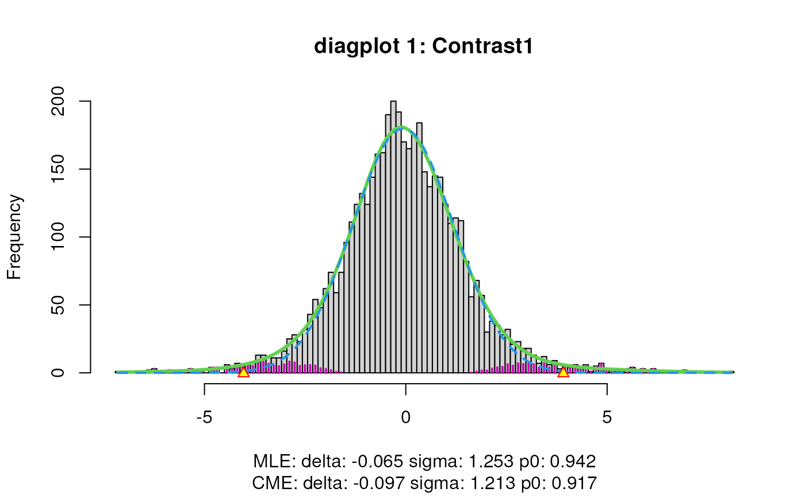
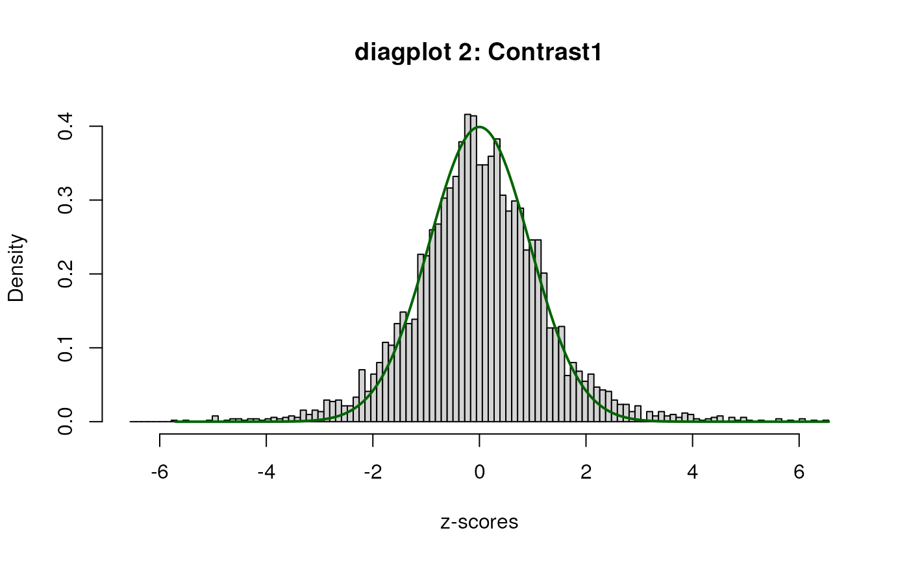
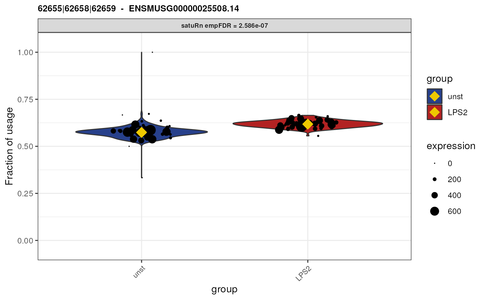
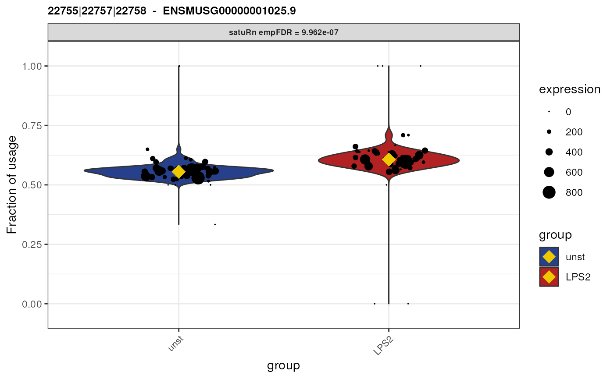
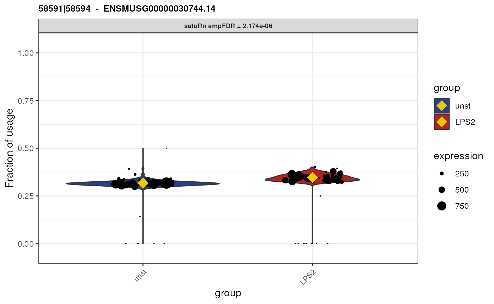
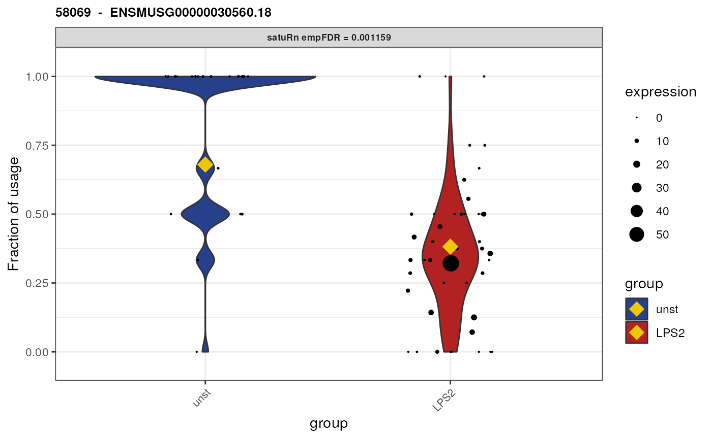
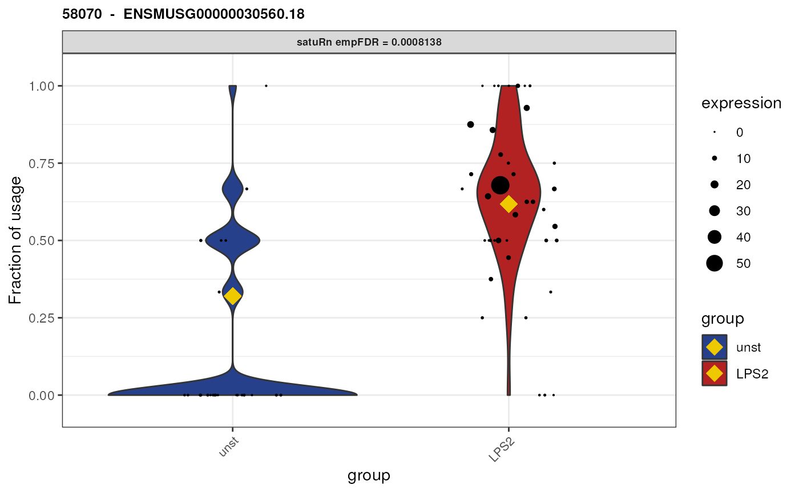
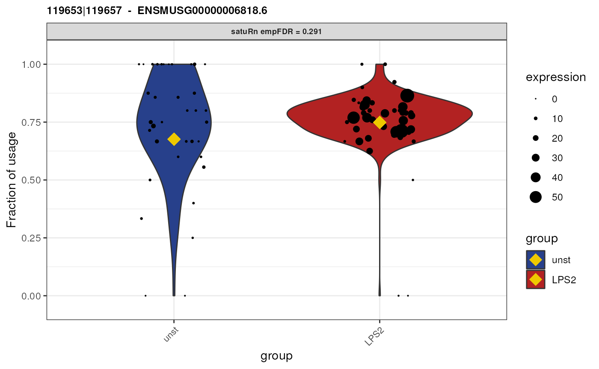
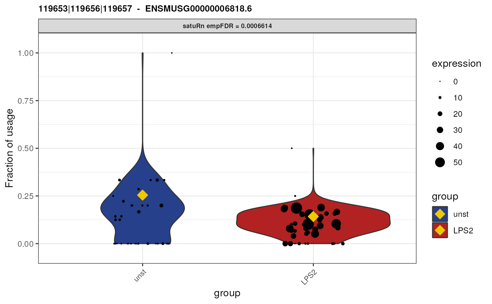
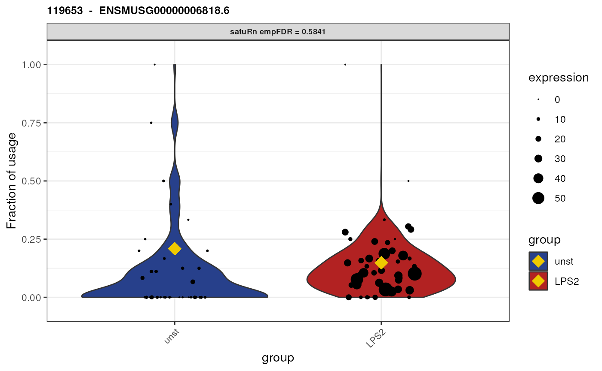

vignettes/Vignette_eqclass.Rmd
Vignette_eqclass.RmdAbstract
Vignette that describes how to use satuRn for performing differential usage analyses on equivalence classes.
In this vignette, we demonstrate how to perform a
differential equivalence class (DECU)
analysis with satuRn, as opposed to the more
common differential transcript usage analysis. We will work on a subset
of the single-cell transcriptomics (10X Genomics Chromium) dataset from
Hagai et al. For a more detailed description on the biological
context of the experiment, we refer to the paragraph
Import equivalence classes of this vignette and the
original publication.
The dataset by Hagai et al. was generated using the 10X Genomics Chromium sequencing protocol. This protocol generates 75 basepair, paired-end reads, one of which harbors the unique molecular identifier (UMI). As a consequence, only one read is used for mapping the against a reference transcriptome or genome. This is typically considered insufficient for obtaining transcript-level quantifications.
However, it is possible to still obtain sub gene-level counts by
quantifying equivalence classes. An equivalence class is the set of
transcripts that a sequencing read is compatible with. As such, reads
that are aligned to the same set of transcripts are part of the same
equivalence class. A transcript compatibility count is the number of
reads assigned to each of the different equivalence classes. For a more
detailed biological interpretation of an equivalence class, we refer to
the visualize DTU paragraph in this vignette, or to our
satuRn publication. Note that we are by no means the first
to suggest performing differential expression analyses on equivalence
classes; see ADD REFERENCES for relevant examples.
Note that for satuRn there is no real distinction
between performing a transcript-level or equivalence class-level
analysis. Once a proper input object is provided, with each row
corresponding to a sub gene-level feature, satuRn will
perform a differential usage analysis regardless of the specific feature
type.
For this vignette, we will perform a toy analysis on a subset of the dataset from Hagai et al. The authors performed bulk and single-cell transcriptomics experiments that aimed to characterize the innate immune response’s transcriptional divergence between different species and the variability in expression among cells. Here, we focus on a small subset of one of the single-cell experiments (10X Genomics sequencing protocol), which characterized mononuclear phagocytes in mice under two treatment regimes: unstimulated (unst) and after two hours of stimulation with lipopolysaccharide (LPS2). To reduce the runtime for this vignette, we only quantified the expression in 50 cells of each treatment group, based on the original whitelist (essentially a list of high quality cells as determined by the CellRanger software that is often used to analyze 10X Genomics data) provided by the original authors.
To obtain equivalence class-level counts, we quantified the fastq
files from Hagai et al. using the Alevin software. Alevin can
take a predetermined whitelist of high quality cells as input, which
allows for quantifying only a subset of the cells. More importantly,
Alevin allows for directly obtaining equivalence class-level counts by
using the -dumpBfh flag. For each data sample, the
equivalence-class counts are outputted in a raw format in a
bfh.txt file. These files can we read and wrangled into a
R-friendly format using the alevinEC function of the
fishpond R package.
Note that other pseudo-alignment tools such as Salmon
(which is internally used by Alevin) and kallisto are also
able to output equivalence class counts.
Here, we read and wrangle the equivalence class counts from the
bfh.txt files of the subset of samples from the dataset by
Hagai et al. that is included in the tximportData
package.
# set path to the bfh.txt files generated by Alevin with the `-dumpBfh` flag
# that are present in the `tximportData` package
dir <- system.file("extdata", package="tximportData")
files <- c(file.path(dir,"alevin/mouse1_unst_50/alevin/bfh.txt"),
file.path(dir,"alevin/mouse1_LPS2_50/alevin/bfh.txt"))
# Additionally read a dataframe that links transcript identifiers to gene
# identifiers
tx2gene <- read.table(file.path(dir, "tx2gene_alevin.tsv"),
sep = "\t",
header = FALSE)
colnames(tx2gene) <- c("isoform_id", "gene_id")
# use `alevinEC` to read and wrangle the equivalence class counts (~10 seconds)
EC_list <- alevinEC(paths = files,
tx2gene = tx2gene,
multigene = FALSE,
ignoreTxVersion = FALSE,
ignoreAfterBar = FALSE,
quiet = TRUE)The AlevinEC function outputs a list. The
counts element of the list is a sparse matrix, where each row
corresponds to an equivalence class and each column corresponds to a
cell identifier. The *_integer* at the end of the cell identifier
corresponds to the sample (more specifically, the index of the element
in the files vector) from which the cell originates.
TCC_mat <- EC_list$counts
dim(TCC_mat)## [1] 63705 100
TCC_mat[1:3,1:3]## 3 x 3 sparse Matrix of class "dgCMatrix"
## CACACACACACACACA_1 ACACACACACACACAC_1 AGAATAGGTTCTCATT_1
## 2183|2187|2188|2190 . . .
## 134559|134560|134561 . . .
## 79281 . . .Note that the equivalence class names are in the form of integers
separated by “|” signs. These integers allow for linking back
equivalence classes to their corresponding genes and gene isoforms
(transcripts) by using the tx2gene_matched element of the
AlevinEC output. For example the first equivalence class,
2183|2187|2188|2190 corresponds to the genes and transcripts in
rows 2183, 2187, 2188 and 2190 of the tx2gene_matched
element.
tx2gene_matched <- EC_list$tx2gene_matched
dim(tx2gene_matched)## [1] 140789 2
head(tx2gene_matched)## isoform_id gene_id
## 1 ENSMUST00000193812.2 ENSMUSG00000102693.2
## 2 ENSMUST00000082908.3 ENSMUSG00000064842.3
## 3 ENSMUST00000162897.2 ENSMUSG00000051951.6
## 4 ENSMUST00000159265.2 ENSMUSG00000051951.6
## 5 ENSMUST00000070533.5 ENSMUSG00000051951.6
## 6 ENSMUST00000192857.2 ENSMUSG00000102851.2
tx2gene_matched[c(2183,2187,2188,2190),]## isoform_id gene_id
## 2183 ENSMUST00000027174.10 ENSMUSG00000026020.10
## 2187 ENSMUST00000191142.7 ENSMUSG00000026020.10
## 2188 ENSMUST00000185772.7 ENSMUSG00000026020.10
## 2190 ENSMUST00000190759.7 ENSMUSG00000026020.10Next, we construct a dataframe that allows for linking each equivalence class (feature) to its corresponding gene and transcript(s). This can be achieved using the following code.
eccs <- strsplit(rownames(TCC_mat),"\\|",fixed=FALSE)
# link ECs to transcripts
txForEachEC <- lapply(eccs, function(ecc){
tx2gene_matched$isoform_id[as.integer(ecc)]
})
# link ECs to genes
eccs <- sapply(eccs, function(x) x[1]) # we can simply take the first transcript
# identifier, since we already made sure all transcripts in the equivalence
# class come from the same gene by by setting multigene = FALSE in the alevin_EC
# function. See the help files of AlevinEC for more information on the function
# arguments
geneForEachEC <- tx2gene_matched$gene_id[as.integer(eccs)]
rd <- data.frame(isoform_id = rownames(TCC_mat),
gene_id = geneForEachEC,
row.names = rownames(TCC_mat))
rd$tx_id <- txForEachEC
head(rd)## isoform_id gene_id
## 2183|2187|2188|2190 2183|2187|2188|2190 ENSMUSG00000026020.10
## 134559|134560|134561 134559|134560|134561 ENSMUSG00000015340.11
## 79281 79281 ENSMUSG00000019863.8
## 27680|27681|27682|27685 27680|27681|27682|27685 ENSMUSG00000028469.16
## 68970|68973|68978 68970|68973|68978 ENSMUSG00000031816.16
## 117815 117815 ENSMUSG00000035107.14
## tx_id
## 2183|2187|2188|2190 ENSMUST0....
## 134559|134560|134561 ENSMUST0....
## 79281 ENSMUST0....
## 27680|27681|27682|27685 ENSMUST0....
## 68970|68973|68978 ENSMUST0....
## 117815 ENSMUST0....In the isoform_id column, we have a copy of the
equivalence class names. Note that the target features (here the
equivalence class) must always be in a column named
isoform_id for downstream analysis with
satuRn.
In the gene_id column, we have the name of the gene to
which the equivalence class corresponds. Note that because we imported
the data with the AlevinEC function with the
multigene option set to FALSE. As such, each equivalence
class will be a set of reads that is only compatible with a single gene.
In the context of a differential usage analysis, this is the most
sensible thing to do; if we would retain reads compatible with multiple
genes, it would not be possible to compute their usage within their gene
(this would result in multiple usages per feature). Hence, we remove
such classes, which in our hands removes approximately 15% of the total
reads, which is in line with previous reports.
Finally, the tx_id column displays the set of
transcripts with which each equivalence class is compatible. This column
is useful for downstream biological interpretation of the equivalence
classes.
Here we provide the cell-level information. Cells originated either from the unstimulated or LPS2 treatment group.
cd <- data.frame(cellID = colnames(EC_list$counts),
mouse = factor(rep("mouse_1",times=100)),
treatment = factor(rep(c("unst", "LPS2"),each=50),
levels = c("unst", "LPS2")),
row.names = colnames(EC_list$counts))
head(cd)## cellID mouse treatment
## CACACACACACACACA_1 CACACACACACACACA_1 mouse_1 unst
## ACACACACACACACAC_1 ACACACACACACACAC_1 mouse_1 unst
## AGAATAGGTTCTCATT_1 AGAATAGGTTCTCATT_1 mouse_1 unst
## CCATTCGGTCTCTTAT_1 CCATTCGGTCTCTTAT_1 mouse_1 unst
## CGTTGGGCATCCTAGA_1 CGTTGGGCATCCTAGA_1 mouse_1 unst
## ACATACACACACACAC_1 ACATACACACACACAC_1 mouse_1 unstWe combine the counts, feature-level information and cell-level
information into a SingleCellExperiment object.
sce <- SingleCellExperiment(assays = list(counts = TCC_mat),
colData = cd,
rowData = rd)
sce## class: SingleCellExperiment
## dim: 63705 100
## metadata(0):
## assays(1): counts
## rownames(63705): 2183|2187|2188|2190 134559|134560|134561 ... 102498
## 46711
## rowData names(3): isoform_id gene_id tx_id
## colnames(100): CACACACACACACACA_1 ACACACACACACACAC_1 ...
## GTCGGGTTCCGGGTGT_2 CCGGGATCACGCCAGT_2
## colData names(3): cellID mouse treatment
## reducedDimNames(0):
## mainExpName: NULL
## altExpNames(0):Here we perform some feature-level filtering. For this task, we adopt
the filtering criterion that is implemented in the R package
edgeR. Alternatively, one could adopt the
dmFilter criterion from the DRIMSeq R package,
which provides a more stringent filtering when both methods are run in
default settings. After filtering, we again remove transcripts that are
the only isoform expressed of a certain gene.
# Remove lowly expressed equivalence classes
filter_edgeR <- filterByExpr(assay(sce),
min.count = 1,
min.total.count = 0,
large.n = 20,
min.prop = 0)## No group or design set. Assuming all samples belong to one group.
table(filter_edgeR)## filter_edgeR
## FALSE TRUE
## 55423 8282
sce <- sce[filter_edgeR,]
# Remove EC that are the only EC expressed of a certain gene
uniqueGene <- which(isUnique(rowData(sce)$gene_id))
sce <- sce[-uniqueGene,]
dim(sce)## [1] 4648 100We here perform a canonical satuRn analysis with
equivalence classes as feature type. For amore elaborate description of
the different steps, we refer to the main vignette
of the satuRn package.
Here we test for differential equivalence class usage between the two treatment groups.
First, we set up a contrast matrix, which specifies which combination
of model parameters corresponds to our research question, i.e., testing
differential usage between the treatment groups. This can be done
automatically with the makeContrasts function of the
limma R package.
group <- sce$treatment
design <- model.matrix(~ 0 + group) # construct design matrix
colnames(design) <- levels(group)
L <- limma::makeContrasts(
Contrast1 = unst - LPS2,
levels = design)
L # contrast matrix## Contrasts
## Levels Contrast1
## unst 1
## LPS2 -1Next we can perform differential usage testing using
testDTU. We again adopt default settings. For more
information on the parameter settings, please consult the help file of
the testDTU function.
sce <- satuRn::testDTU(
object = sce,
contrasts = L,
diagplot1 = TRUE,
diagplot2 = TRUE,
sort = FALSE,
forceEmpirical = FALSE
)
When set to TRUE, the diagplot1 and
diagplot2 arguments generate diagnostic plots. See our main
vignette
for a detailed explanation on their interpretation.
The test results are now saved into the rowData of our
SummarizedExperiment object under the name fitDTUResult_
followed by the name of the contrast of interest (i.e. the column names
of the contrast matrix). The results can be accessed as follows:
## estimates se df t
## 122945|122946|122947 -0.05480824 0.07445865 78.23294 -0.7360896
## 72091|72095|72096|72098|72099 -0.02726631 0.07477234 82.23294 -0.3646577
## 26487|26488 -0.09546199 0.09490841 94.23294 -1.0058328
## 13952|13953 0.10396911 0.13509472 78.23294 0.7696016
## 41797|41798|41799 0.13407728 0.11803309 48.23294 1.1359296
## 24431|24432|24433 -0.19919031 0.16769118 59.23294 -1.1878401
## pval regular_FDR empirical_pval
## 122945|122946|122947 0.4638776 0.7933577 0.5246304
## 72091|72095|72096|72098|72099 0.7163030 0.9134092 0.7326133
## 26487|26488 0.3170718 0.6864931 0.3952475
## 13952|13953 0.4438538 0.7830678 0.5757954
## 41797|41798|41799 0.2615988 0.6316423 0.3984410
## 24431|24432|24433 0.2396377 0.6140723 0.3221089
## empirical_FDR
## 122945|122946|122947 0.9478657
## 72091|72095|72096|72098|72099 0.9851556
## 26487|26488 0.9106148
## 13952|13953 0.9634626
## 41797|41798|41799 0.9135809
## 24431|24432|24433 0.8819748See our main vignette for a detailed explanation on the interpretation of the different columns.
Finally, we may visualize the usage of the top 3 differentially used
equivalence classes in the different treatment groups. By the setting
the transcripts and genes arguments to
NULL and specifying top.n = 3, the 3 features
with the smallest (empirically correct) false discovery rates are
displayed.
group1 <- colnames(sce)[sce$treatment == "unst"]
group2 <- colnames(sce)[sce$treatment == "LPS2"]
plots <- satuRn::plotDTU(
object = sce,
contrast = "Contrast1",
groups = list(group1, group2),
coefficients = list(c(1, 0), c(0, 1)),
summaryStat = "model",
transcripts = NULL,
genes = NULL,
top.n = 3)
# to have same layout as in our publication
for (i in seq_along(plots)) {
current_plot <- plots[[i]] +
scale_fill_manual(labels = c("unst", "LPS2"),
values = c("royalblue4","firebrick")) +
scale_x_discrete(labels = c("unst", "LPS2"))
print(current_plot)
}
Below, we discuss how differential usage between treatment groups of equivalence classes can be interpreted biologically. We discuss this for two genes as examples.
We here plot the differential usage of all the equivalence classes
(retained after feature-level filtering) of the gene
ENSMUSG00000030560.18. We plot each equivalence class of this gene by
specifying genes = "ENSMUSG00000030560.18".
plots <- satuRn::plotDTU(
object = sce,
contrast = "Contrast1",
groups = list(group1, group2),
coefficients = list(c(1, 0), c(0, 1)),
summaryStat = "model",
transcripts = NULL,
genes = "ENSMUSG00000030560.18",
top.n = 3)
# to have same layout as in our publication
for (i in seq_along(plots)) {
current_plot <- plots[[i]] +
scale_fill_manual(labels = c("unst", "LPS2"),
values = c("royalblue4","firebrick")) +
scale_x_discrete(labels = c("unst", "LPS2"))
print(current_plot)
}## Warning: Removed 32 rows containing non-finite values
## (`stat_ydensity()`).## Warning: The following aesthetics were dropped during statistical transformation: width
## ℹ This can happen when ggplot fails to infer the correct grouping structure in
## the data.
## ℹ Did you forget to specify a `group` aesthetic or to convert a numerical
## variable into a factor?## Warning: Removed 32 rows containing missing values (`geom_point()`).
## Warning: Removed 32 rows containing non-finite values
## (`stat_ydensity()`).## Warning: The following aesthetics were dropped during statistical transformation: width
## ℹ This can happen when ggplot fails to infer the correct grouping structure in
## the data.
## ℹ Did you forget to specify a `group` aesthetic or to convert a numerical
## variable into a factor?## Warning: Removed 32 rows containing missing values (`geom_point()`).
We see that there are only two equivalence classes for this gene,
58069 and 58070. In addition, these
equivalence classes are of length 1. This means that each equivalence
class corresponds only to a single transcript (isoform).
## [[1]]
## [1] "ENSMUST00000032779.12"
##
## [[2]]
## [1] "ENSMUST00000131108.9"As such, even though we performed an analysis on the equivalence class level, we here can attribute the observed change in usage to specific transcripts! I.e., we can say that both transcript “ENSMUST00000032779.12” and transcript “ENSMUST00000131108.9” are beeing differentially used between unstimulated and LPS (2 hours) stimulated cells.
Below, we show an example of a geene for which the biological interpretation will be more ambiguous.
plots <- satuRn::plotDTU(
object = sce,
contrast = "Contrast1",
groups = list(group1, group2),
coefficients = list(c(1, 0), c(0, 1)),
summaryStat = "model",
transcripts = NULL,
genes = "ENSMUSG00000006818.6",
top.n = 3)
# to have same layout as in our publication
for (i in seq_along(plots)) {
current_plot <- plots[[i]] +
scale_fill_manual(labels = c("unst", "LPS2"),
values = c("royalblue4","firebrick")) +
scale_x_discrete(labels = c("unst", "LPS2"))
print(current_plot)
}## Warning: Removed 16 rows containing non-finite values
## (`stat_ydensity()`).## Warning: The following aesthetics were dropped during statistical transformation: width
## ℹ This can happen when ggplot fails to infer the correct grouping structure in
## the data.
## ℹ Did you forget to specify a `group` aesthetic or to convert a numerical
## variable into a factor?## Warning: Removed 16 rows containing missing values (`geom_point()`).
## Warning: Removed 16 rows containing non-finite values
## (`stat_ydensity()`).## Warning: The following aesthetics were dropped during statistical transformation: width
## ℹ This can happen when ggplot fails to infer the correct grouping structure in
## the data.
## ℹ Did you forget to specify a `group` aesthetic or to convert a numerical
## variable into a factor?## Warning: Removed 16 rows containing missing values (`geom_point()`).
## Warning: Removed 16 rows containing non-finite values
## (`stat_ydensity()`).## Warning: The following aesthetics were dropped during statistical transformation: width
## ℹ This can happen when ggplot fails to infer the correct grouping structure in
## the data.
## ℹ Did you forget to specify a `group` aesthetic or to convert a numerical
## variable into a factor?## Warning: Removed 16 rows containing missing values (`geom_point()`).
Gene “ENSMUSG00000058427.11” has 3 equivalence classes:
119653|119657, 119653|119656|119657 and
119653. Only equivalence class
119653|119656|119657 is flagged as significantly
differentially used between the two treatment groups. However, when we
look at the feature-level information,
## [[1]]
## [1] "ENSMUST00000007012.6"
##
## [[2]]
## [1] "ENSMUST00000007012.6" "ENSMUST00000233897.2"
##
## [[3]]
## [1] "ENSMUST00000007012.6" "ENSMUST00000232726.2" "ENSMUST00000233897.2"we see that this equivalence class contains reads that are compatible with both transcript “ENSMUST00000007012.6” and “ENSMUST00000233897.2”. As such, we cannot attribute the observed difference in usage to a specific transcript.
Furthermore, transcript “ENSMUST00000007012.6” is involved in all equivalence classes, and transcript “ENSMUST00000233897.2” is involved in both the 2nd and third equivalence class. Equivalence class 1 and 3 are both not significantly differentially used. As such, among the three transcripts involved in this gene, we did not get a clear picture which of the specific isoforms are differentially used.
In conclusion, we here displayed how to perform a equivalence
class-level differential transcript usage analysis using
satuRn. The biggest advantage of equivalence classes is
that they can even be obtained from sequencing protocols that do not
allow for transcript level quantification, which includes many of the
droplet-based protocols such as 10X Genomics Chromium. Their biggest
drawback is their downstream biological interpretation. In some cases,
it will be possible to uniquely link a equivalence class to a specific
isoform. However, in most cases, multiple transcripts can be compatible
with the equivalence class. In those cases, the interpretation is often
limited to recognizing that something is changing internally in the
gene, but its unclear which exact isoforms are involved. This, however,
still provides sub gene-level information, and may prompt follow-up
experiments with a different methodolgy that allows for pinpointing the
exact transcript-level change.
## R Under development (unstable) (2023-02-22 r83892)
## Platform: x86_64-pc-linux-gnu (64-bit)
## Running under: Ubuntu 22.04.1 LTS
##
## Matrix products: default
## BLAS: /usr/lib/x86_64-linux-gnu/openblas-pthread/libblas.so.3
## LAPACK: /usr/lib/x86_64-linux-gnu/openblas-pthread/libopenblasp-r0.3.20.so; LAPACK version 3.10.0
##
## locale:
## [1] LC_CTYPE=en_US.UTF-8 LC_NUMERIC=C
## [3] LC_TIME=en_US.UTF-8 LC_COLLATE=en_US.UTF-8
## [5] LC_MONETARY=en_US.UTF-8 LC_MESSAGES=en_US.UTF-8
## [7] LC_PAPER=en_US.UTF-8 LC_NAME=C
## [9] LC_ADDRESS=C LC_TELEPHONE=C
## [11] LC_MEASUREMENT=en_US.UTF-8 LC_IDENTIFICATION=C
##
## time zone: UTC
## tzcode source: system (glibc)
##
## attached base packages:
## [1] stats4 stats graphics grDevices utils datasets methods
## [8] base
##
## other attached packages:
## [1] fishpond_2.5.4 edgeR_3.41.2
## [3] limma_3.55.4 ggplot2_3.4.1
## [5] satuRn_1.7.3 SingleCellExperiment_1.21.0
## [7] SummarizedExperiment_1.29.1 Biobase_2.59.0
## [9] GenomicRanges_1.51.4 GenomeInfoDb_1.35.15
## [11] IRanges_2.33.0 S4Vectors_0.37.4
## [13] BiocGenerics_0.45.0 MatrixGenerics_1.11.0
## [15] matrixStats_0.63.0 tximportData_1.27.0
## [17] BiocStyle_2.27.1
##
## loaded via a namespace (and not attached):
## [1] gtable_0.3.1 xfun_0.37 bslib_0.4.2
## [4] lattice_0.20-45 vctrs_0.5.2 tools_4.3.0
## [7] bitops_1.0-7 generics_0.1.3 parallel_4.3.0
## [10] tibble_3.1.8 fansi_1.0.4 highr_0.10
## [13] pkgconfig_2.0.3 Matrix_1.5-3 data.table_1.14.8
## [16] desc_1.4.2 lifecycle_1.0.3 GenomeInfoDbData_1.2.9
## [19] farver_2.1.1 compiler_4.3.0 stringr_1.5.0
## [22] textshaping_0.3.6 munsell_0.5.0 codetools_0.2-19
## [25] htmltools_0.5.4 sass_0.4.5 RCurl_1.98-1.10
## [28] yaml_2.3.7 pkgdown_2.0.7 pillar_1.8.1
## [31] jquerylib_0.1.4 svMisc_1.2.3 BiocParallel_1.33.9
## [34] DelayedArray_0.25.0 cachem_1.0.7 locfdr_1.1-8
## [37] boot_1.3-28.1 gtools_3.9.4 locfit_1.5-9.7
## [40] tidyselect_1.2.0 digest_0.6.31 stringi_1.7.12
## [43] dplyr_1.1.0 purrr_1.0.1 bookdown_0.32
## [46] labeling_0.4.2 splines_4.3.0 rprojroot_2.0.3
## [49] fastmap_1.1.1 grid_4.3.0 colorspace_2.1-0
## [52] cli_3.6.0 magrittr_2.0.3 utf8_1.2.3
## [55] withr_2.5.0 scales_1.2.1 rmarkdown_2.20
## [58] XVector_0.39.0 ragg_1.2.5 pbapply_1.7-0
## [61] memoise_2.0.1 evaluate_0.20 knitr_1.42
## [64] rlang_1.0.6 Rcpp_1.0.10 glue_1.6.2
## [67] BiocManager_1.30.20 jsonlite_1.8.4 R6_2.5.1
## [70] systemfonts_1.0.4 fs_1.6.1 zlibbioc_1.45.0